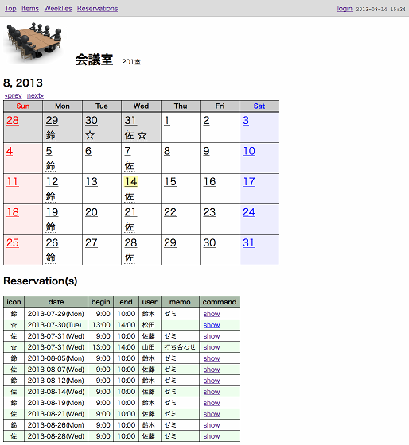

rsvcal
キーワード
説明
会議室や機器等の予約管理をするためのオンラインカレンダーです。
複数の部屋や機器を登録できます。
職場等の閉じた環境での使用を想定しており、セキュリティよりも利便性を重視しております。
管理者ユーザーに限定されている操作は、新規グループ作成と新規アイテム作成だけです。
一般ユーザーはログイン不要で予約ができます。
特長
- ログイン不要ですぐに予約ができる。
- 毎週の定期予約ができる。
- 各予約毎にアイコンを設定できる。
- アイコンは任意の１文字。標準で用意されたメニューから選択も可能。
- カレンダーのアイコン上でマウスを静止させることで出現するバルーンヘルプにより、予約内容を確認できる。
- トップページにある「今日」「今日から数日」により、全アイテムの予約をまとめて確認できる。
できないこと
- 予約の衝突検知ができない(ダブルブッキングが可能)。
- 複数日にまたがる予約ができない。
スクリーンショット


開発環境(2013-7)
- Mac
- 10.8.4
- Ruby
- 2.0.0
- Rails
- 4.0.0
- RSpec
- 2.14.3
- MySQL
- Ver 14.14 Distrib 5.6.12
- SQLite
- 3.7.12
会議室のサンプルに使用した写真
All sizes | 特別会議室 | Flickr - Photo Sharing!
http://www.flickr.com/photos/ysakaki/3732662818/sizes/s/in/photostream/
- Author
- MURAKAMI Teiji
- GitHub
- https://github.com/murakamit/rsvcal